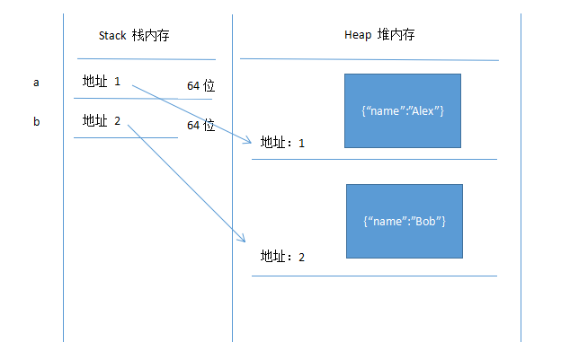
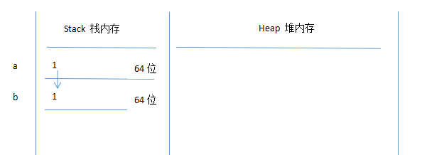
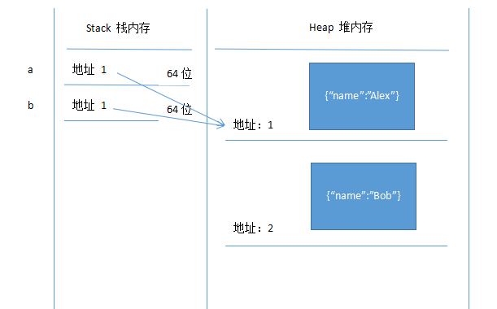

在此之前，需要分清那些类型属于复杂，哪些属于普通：
看到那么多类型一定会觉得很晕吧，在日常使用这些类型进行赋值，读取和覆盖时，很可能会产生出两种截然不同的情况，即所谓的深拷贝和浅拷贝。形成这种情况的原因主要是发生在 数据内存中机制不同，因此本文将围绕数据内存来描述普通类型与对象的区别：
让我们看看在执行代码时，内存中发生了什么吧
我们先弄一个普通类型
var a = 1 //声明一个a 并把数值1 赋给a
以下是内存中的工作，在栈内存区开了一个64位的空间，然后把1放进去与a对应
var a = 1 //声明一个a 并把数值1 赋给a
var b = 2 //声明一个b 并把数值2 赋给b
很显然，普通类型的数据都是存放在栈内存中，那么让我们看看对象是怎么存的
var a = { "name":"Alex" }
var b = { "name":"Bob" }

可以看到，复杂类型的内存存放机制会复杂很多，它会在堆内存中存放并把存放的地址与栈内存中的地址对应起来。那么从这点存放的位置就体现出第一个区别
由于存放的位置不同，所以接下去就产生了一个新的概念，也就是浅拷贝与深拷贝，再往下看
//普通类型
var a = 1
var b = a
b = 2 //这时候 a 等于 1
==========================
//对象
var a = { "name":"Alex" }
var b = a
b.name = "Bob"; //这时候a.name 等于Bob
很奇怪，这里显然出现了差异，普通类型赋值后互不干扰，而对象似乎发生了联动。我们再用图例来说明
这里可以看到b直接把a的数据复制了下来，但并没有影响到a，他们是互为独立的的复制，这就是深拷贝 【注意：所有普通类型的操作都是深拷贝】
在看看对象会发生什么：
显然，b仅仅复制了a的地址内容，因此他们同时引用了同一片内存地址的数据，自然操作也在一个数据中，这种就是浅拷贝 【注意：对象如果需要做深拷贝需要进行特殊处理】
总结：这就是对于普通类型与对象根本的不同，从内存的存放机制不同并衍生出他们的操作也会带来的差异